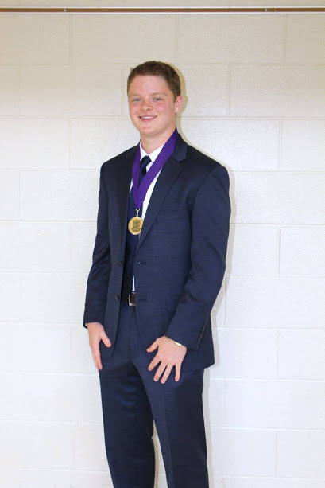

Hello! My name is Liam Grant. I am currently a Freshman at the University of Georgia, and I plan to major in Management Information Systems at the Terry College of Business. I am here to design a web page for a school project. In this web page, I will talk about what I plan to do when I graduate from the University of Georgia. I plan to work as an IT consultant with an emphasis in data analytics and data management. I plan to work for one of the big four consulting companies: Deloitte, PWC, KPMG, or EY. As of now I don’t know what my future holds beyond IT consulting, but I am excited to find out on my journey ahead! I will also talk about some of the challenges and problems in the IT industry today.
